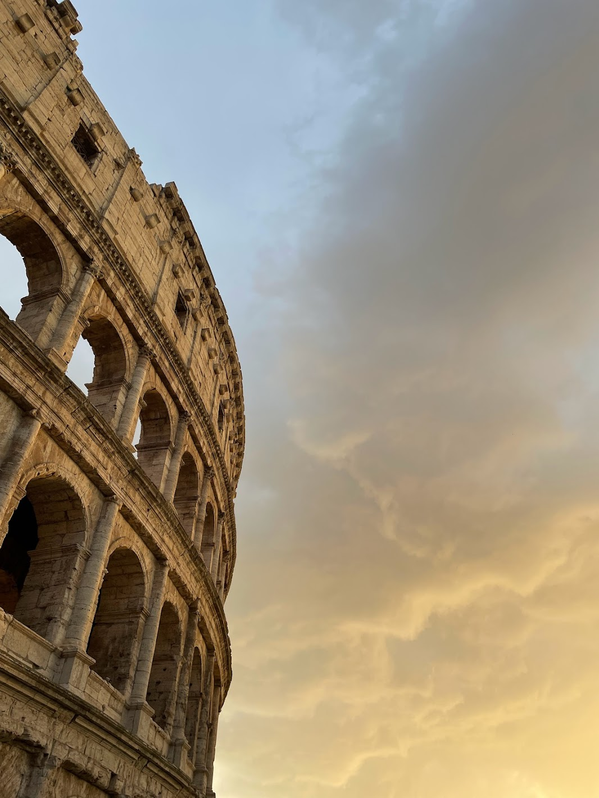
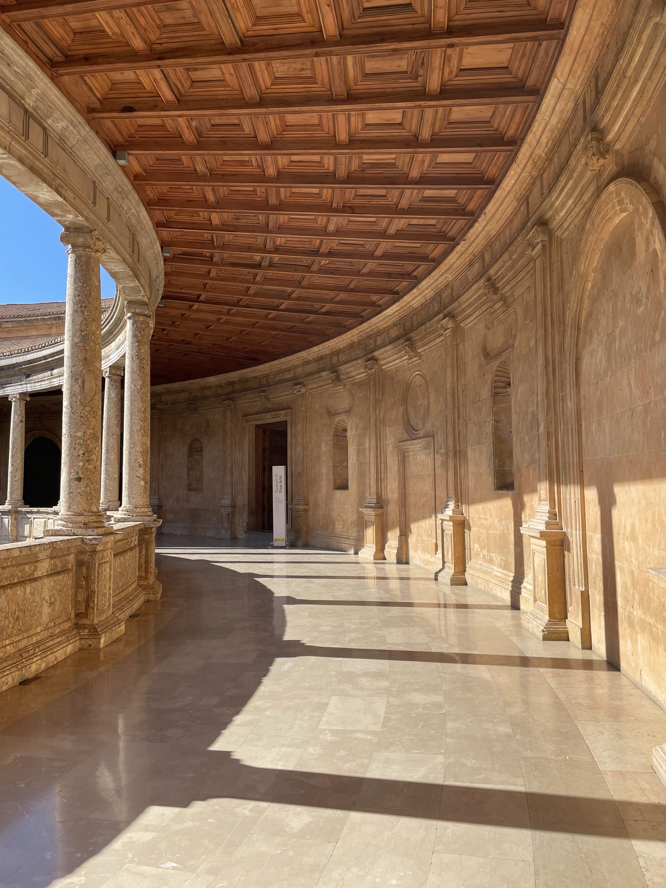
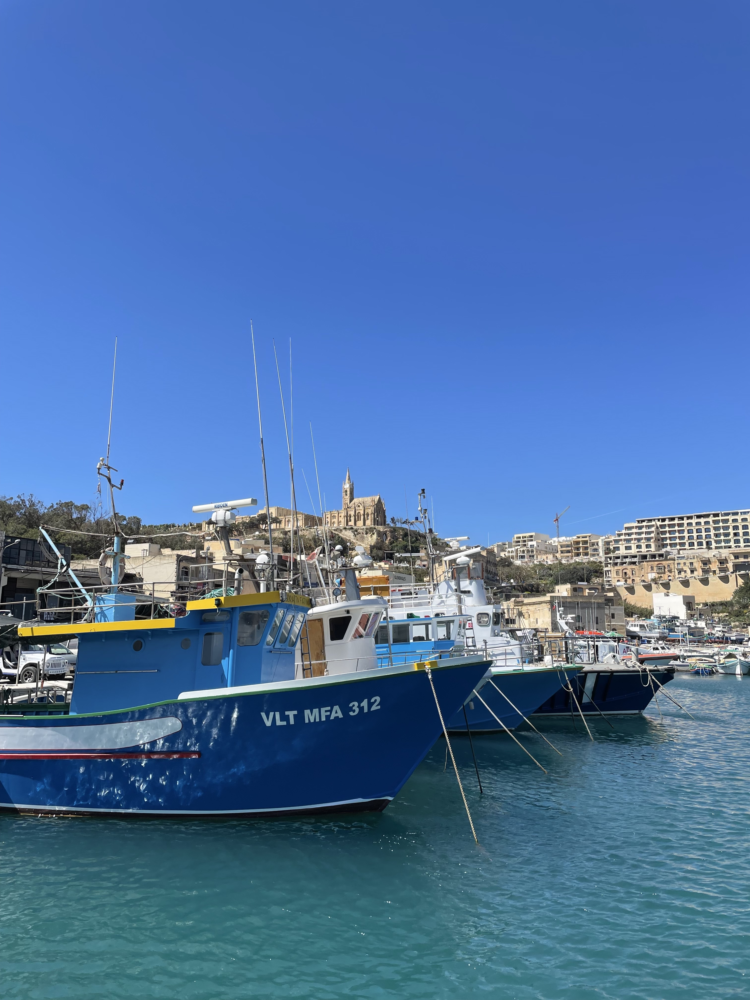
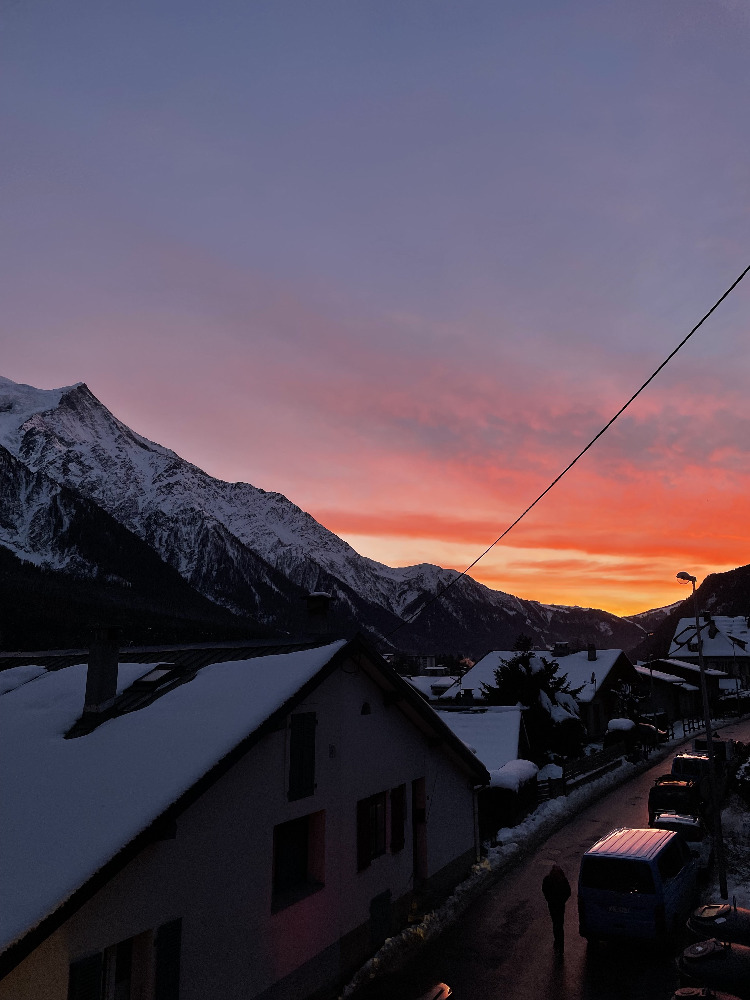
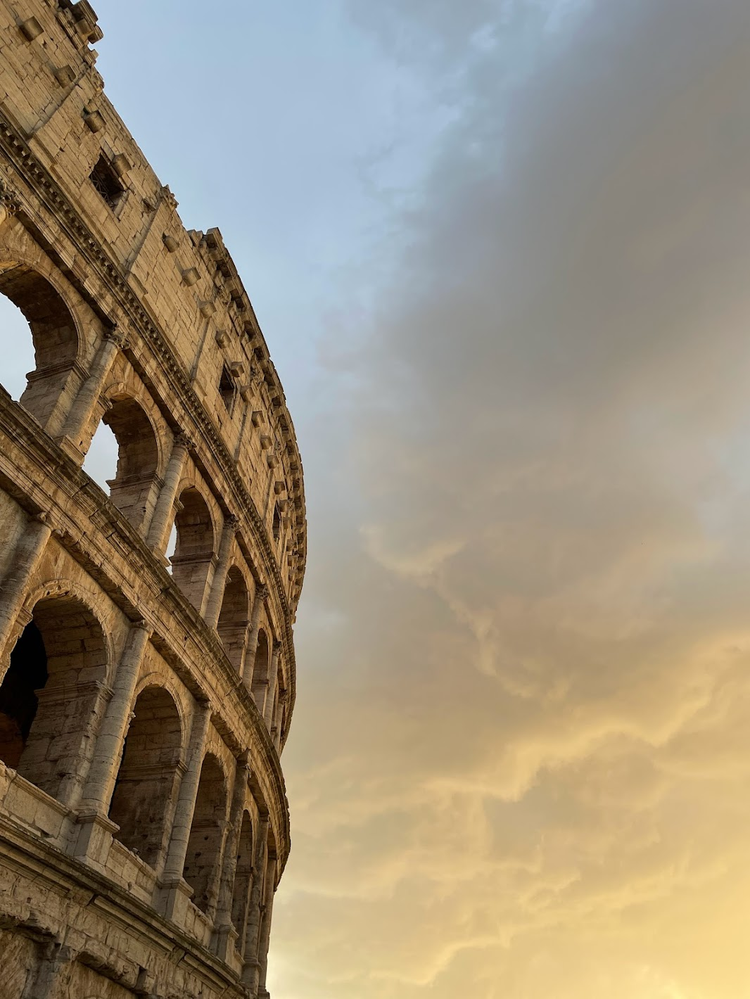
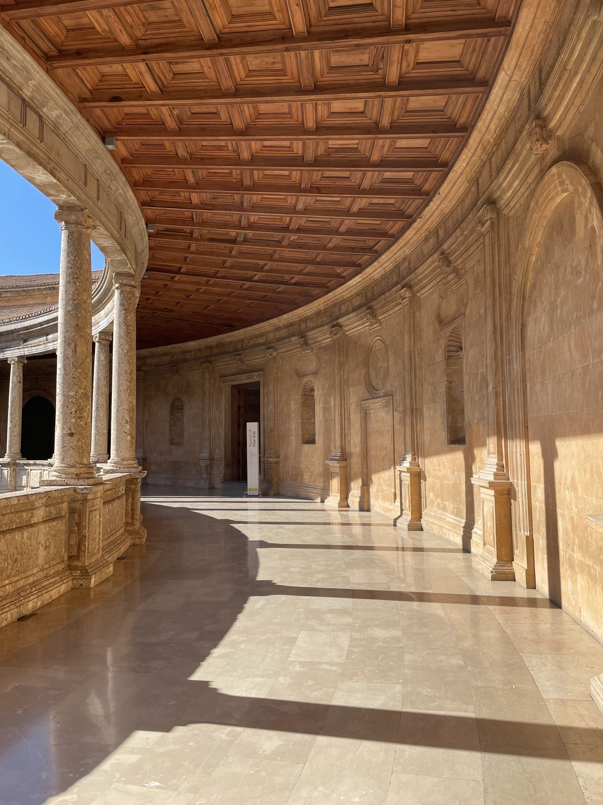
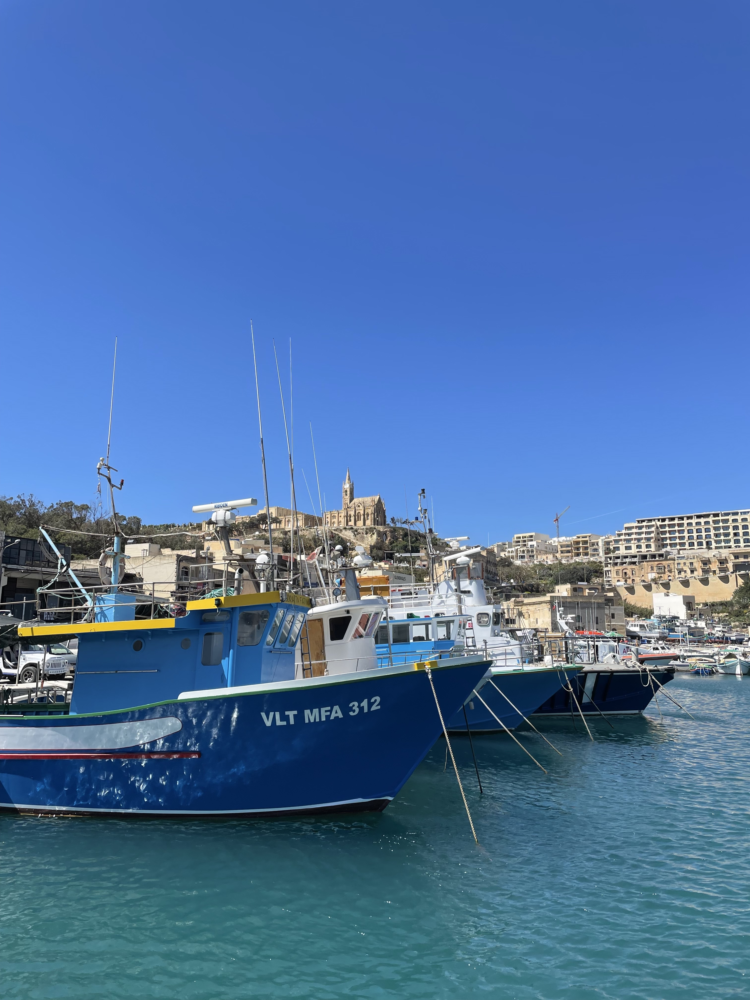
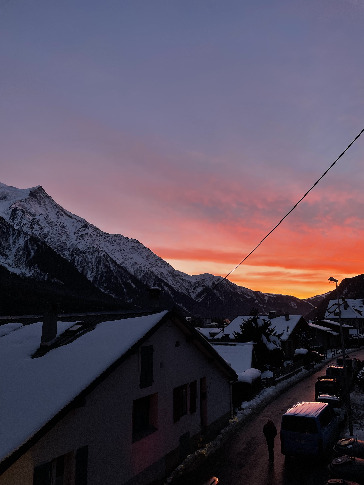

What drives me?

In 2001, I was born with sensorineural hearing loss on my right ear, which introduced me to hearing aids early on. Being hearing impaired has sparked an interest in me to aid the hearing impaired community with the goal of improving upon existing aiding technology and ensuring that people like me experience their best lives possible. But more generally, I am drawn to working behind medical device production, manufacturing, and design because I have always been a hands-on individual and I am amazed at the impact one can bring to patients' lives by doing this. Therefore, my goal is to work in industry to learn more about this process and gain experience in the field.
With these goals in mind, I have built experience in 3D prototyping and modeling using SOLIDWORKS as well as programming with Python and MATLAB (you can take a look at some of the projects I have completed by clicking on the 'Projects' tab). For instance, last summer, I worked with a research team at Vanderbilt University's Medical Center in analyzing cochlear implant users' multisensory integration abilities when presented with audiovisual stimuli at varying signal-to-noise ratios. I was responsible for designing the Python-based experiment that presented the stimuli to our participants.
But what really drives me deep down is my hunger for a happy, independent life where I know that I have tried my best to be the best version of myself.
Born in the US, Venezuelan origin
For most of my life, I have lived in Miami, FL, but most of my family is Venezuelan, including my parents. I love spending time at the beach, relaxing and being by the water with my friends and family. I also love the culture there, full of diversity and people from all over the globe. One of my main hobbies, in fact, is learning new languages and traveling because I find it so important to get to know the world around us as much as possible before our time is over. I currently speak English, Spanish, Portuguese, and French but I hope to keep the list expanding! I have thankfully had the opportunity to travel to Europe, South America, and Africa.
Some of my other pastimes include playing tennis, spending times socializing with those I love, and recently, I discovered that I like photography. I really enjoy taking pictures that will help me cherish that moment for the rest of my life and that I could look back to whenever I want to take a trip down memory lane. Eventually, with this website, I hope to share some of my language-learning tips with you all because I feel that I have a great way of memorizing and learning the grammar behind a language, which I firmly believe is the hardest part about learning a language.
Love to travel...
As I mentioned above, traveling is one of my main hobbies, and luckily enough, this past semester I had the privilege to study abroad in Madrid. It was truly an unforgettable experience and one that I would love to relive. I got to visit many countries and learn a lot about a variety of cultures and the European lifestyle, and thankfully got the chance to practice my Portuguese and French.
 







Mastering Language-Learning
Languages are the keys into the souls of cultures and other countries, and more importantly, they can expose an individual to a multitude of professional opportunities across the globe. This perfectly ties into one of my favorite language-learning quotes from a Chinese proverb:
"To learn a language is to have one more windown from which to look at the world."
But more important than learning languages is mastering the methods or ways in which we learn them; by doing so, one can greatly reduce the amount of time it takes to reach a sufficiently advanced and proficient level. One of my main objectives along this path is to formulate a series of steps that will work for any individual, regardless of learning styles or focusing capabilites. This is why I have made the effort to compile the language-learning strategies that have worked best for me and that and that have helped me reach level B1/B2 French and Portuguese in only three months. Best yet? It's completely free. Feel free to send me an email if you are interested in learning more about mastering the language-learning process.